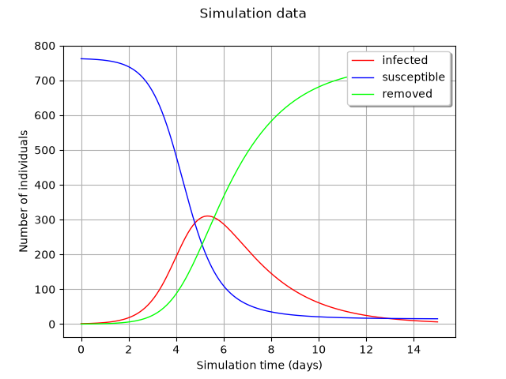
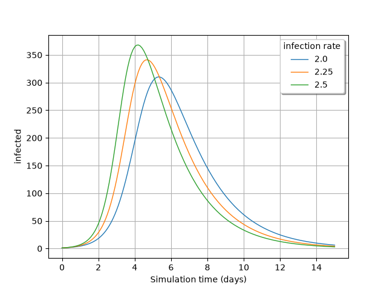

Note
Go to the end to download the full example code.
FMUPointToFieldFunction basics#
FMUPointToFieldFunction wraps the FMU into an
openturns.PointToFieldFunction object.
This kind of function accepts openturns.Point or
openturns.Sample as inputs, and outputs a
openturns.Sample or a set of openturns.Field.
import openturns as ot
import otfmi.example.utility
import openturns.viewer as viewer
First, retrieve the path to epid.fmu.
path_fmu = otfmi.example.utility.get_path_fmu("epid")
Wrap the FMU in an openturns.PointToFieldFunction object:
function = otfmi.FMUPointToFieldFunction(
path_fmu,
inputs_fmu=["infection_rate"],
outputs_fmu=["infected", "susceptible", "removed"],
start_time=0.0,
final_time=15.0,
)
Note
The start and final times must define an interval comprising the mesh. Setting manually the start and final times is recommended to avoid uncontrolled simulation duration.
Simulate the function on an input openturns.Point yields an output
as openturns.Sample, corresponding to the output evolution over time
Retrieve the simulation mesh
timeGrid = function.getOutputMesh().getVertices()
Plot the data
graph = ot.Graph("Simulation data", "Simulation time (days)", "Number of individuals", True)
graph.setLegendPosition("upper right")
for i in range(function.getOutputDimension()):
curve = ot.Curve(timeGrid, y[:, i])
graph.add(curve)
graph.setLegends(function.getOutputDescription())
graph.setColors(["red", "blue", "green"])
view = viewer.View(graph)

Simulate the function on a input openturns.Sample yields a set of
fields called openturns.ProcessSample:
[field 0:
[ t infected susceptible removed ]
0 : [ 0 1 762 0 ]
1 : [ 0.1 1.21451 761.785 0 ]
2 : [ 0.2 1.47439 761.526 0 ]
3 : [ 0.3 1.7891 761.211 0 ]
4 : [ 0.4 2.17242 760.828 0 ]
5 : [ 0.5 2.63661 760.363 0 ]
6 : [ 0.6 3.19841 759.802 0 ]
7 : [ 0.7 3.88223 759.118 0 ]
8 : [ 0.8 4.70961 758.29 0 ]
9 : [ 0.9 5.70999 757.29 0 ]
10 : [ 1 6.92615 756.074 0 ]
11 : [ 1.1 8.39548 754.605 0 ]
12 : [ 1.2 10.1689 752.831 0 ]
13 : [ 1.3 12.3201 750.68 0 ]
14 : [ 1.4 14.9124 748.088 0 ]
15 : [ 1.5 18.0315 744.968 0 ]
16 : [ 1.6 21.8003 741.2 0 ]
17 : [ 1.7 26.3212 736.679 0 ]
18 : [ 1.8 31.7312 731.269 0 ]
19 : [ 1.9 38.2239 724.776 0 ]
20 : [ 2 45.9507 717.049 0 ]
21 : [ 2.1 55.1104 707.89 0 ]
22 : [ 2.2 65.9762 697.024 0 ]
23 : [ 2.3 78.7347 684.265 0 ]
24 : [ 2.4 93.6218 669.378 0 ]
25 : [ 2.5 110.945 652.055 0 ]
26 : [ 2.6 130.845 632.155 0 ]
27 : [ 2.7 153.484 609.516 0 ]
28 : [ 2.8 179.044 583.956 0 ]
29 : [ 2.9 207.438 555.562 0 ]
30 : [ 3 238.543 524.457 0 ]
31 : [ 3.1 272.168 490.832 0 ]
32 : [ 3.2 307.821 455.179 0 ]
33 : [ 3.3 344.961 418.039 0 ]
34 : [ 3.4 382.941 380.059 0 ]
35 : [ 3.5 420.997 342.003 0 ]
36 : [ 3.6 458.399 304.601 0 ]
37 : [ 3.7 494.396 268.604 0 ]
38 : [ 3.8 528.423 234.577 0 ]
39 : [ 3.9 560.017 202.983 0 ]
40 : [ 4 588.776 174.224 0 ]
41 : [ 4.1 614.617 148.383 0 ]
42 : [ 4.2 637.514 125.486 0 ]
43 : [ 4.3 657.468 105.532 0 ]
44 : [ 4.4 674.734 88.2664 0 ]
45 : [ 4.5 689.531 73.4687 0 ]
46 : [ 4.6 702.048 60.9524 0 ]
47 : [ 4.7 712.612 50.3876 0 ]
48 : [ 4.8 721.476 41.5241 0 ]
49 : [ 4.9 728.835 34.165 0 ]
50 : [ 5 734.954 28.0463 0 ]
51 : [ 5.1 740.022 22.9776 0 ]
52 : [ 5.2 744.185 18.8147 0 ]
53 : [ 5.3 747.617 15.3834 0 ]
54 : [ 5.4 750.439 12.5615 0 ]
55 : [ 5.5 752.742 10.258 0 ]
56 : [ 5.6 754.631 8.36853 0 ]
57 : [ 5.7 756.179 6.82088 0 ]
58 : [ 5.8 757.438 5.5618 0 ]
59 : [ 5.9 758.468 4.53182 0 ]
60 : [ 6 759.31 3.69001 0 ]
61 : [ 6.1 759.994 3.00643 0 ]
62 : [ 6.2 760.552 2.44805 0 ]
63 : [ 6.3 761.008 1.99222 0 ]
64 : [ 6.4 761.378 1.62245 0 ]
65 : [ 6.5 761.679 1.32064 0 ]
66 : [ 6.6 761.926 1.07442 0 ]
67 : [ 6.7 762.125 0.87479 0 ]
68 : [ 6.8 762.288 0.71192 0 ]
69 : [ 6.9 762.421 0.579098 0 ]
70 : [ 7 762.529 0.471441 0 ]
71 : [ 7.1 762.616 0.383627 0 ]
72 : [ 7.2 762.688 0.312027 0 ]
73 : [ 7.3 762.746 0.254002 0 ]
74 : [ 7.4 762.793 0.206678 0 ]
75 : [ 7.5 762.832 0.168096 0 ]
76 : [ 7.6 762.863 0.136832 0 ]
77 : [ 7.7 762.889 0.111335 0 ]
78 : [ 7.8 762.909 0.090549 0 ]
79 : [ 7.9 762.926 0.0737061 0 ]
80 : [ 8 762.94 0.0599709 0 ]
81 : [ 8.1 762.951 0.0487739 0 ]
82 : [ 8.2 762.96 0.0397011 0 ]
83 : [ 8.3 762.968 0.0323025 0 ]
84 : [ 8.4 762.974 0.0262712 0 ]
85 : [ 8.5 762.979 0.0213842 0 ]
86 : [ 8.6 762.983 0.017399 0 ]
87 : [ 8.7 762.986 0.0141503 0 ]
88 : [ 8.8 762.988 0.011518 0 ]
89 : [ 8.9 762.991 0.00937145 0 ]
90 : [ 9 762.992 0.00762164 0 ]
91 : [ 9.1 762.994 0.00620381 0 ]
92 : [ 9.2 762.995 0.00504764 0 ]
93 : [ 9.3 762.996 0.00410515 0 ]
94 : [ 9.4 762.997 0.00334148 0 ]
95 : [ 9.5 762.997 0.00271874 0 ]
96 : [ 9.6 762.998 0.0022111 0 ]
97 : [ 9.7 762.998 0.00179978 0 ]
98 : [ 9.8 762.999 0.00146436 0 ]
99 : [ 9.9 762.999 0.00119093 0 ]
100 : [ 10 762.999 0.000969388 0 ]
101 : [ 10.1 762.999 0.000788726 0 ]
102 : [ 10.2 762.999 0.000641456 0 ]
103 : [ 10.3 762.999 0.000522127 0 ]
104 : [ 10.4 763 0.00042482 0 ]
105 : [ 10.5 763 0.000345498 0 ]
106 : [ 10.6 763 0.000281226 0 ]
107 : [ 10.7 763 0.000228815 0 ]
108 : [ 10.8 763 0.00018609 0 ]
109 : [ 10.9 763 0.000151472 0 ]
110 : [ 11 763 0.000123243 0 ]
111 : [ 11.1 763 0.000100231 0 ]
112 : [ 11.2 763 8.15853e-05 0 ]
113 : [ 11.3 763 6.63806e-05 0 ]
114 : [ 11.4 763 5.3986e-05 0 ]
115 : [ 11.5 763 4.39431e-05 0 ]
116 : [ 11.6 763 3.57536e-05 0 ]
117 : [ 11.7 763 2.90777e-05 0 ]
118 : [ 11.8 763 2.36684e-05 0 ]
119 : [ 11.9 763 1.92574e-05 0 ]
120 : [ 12 763 1.56617e-05 0 ]
121 : [ 12.1 763 1.27482e-05 0 ]
122 : [ 12.2 763 1.03723e-05 0 ]
123 : [ 12.3 763 8.43561e-06 0 ]
124 : [ 12.4 763 6.86636e-06 0 ]
125 : [ 12.5 763 5.5867e-06 0 ]
126 : [ 12.6 763 4.54355e-06 0 ]
127 : [ 12.7 763 3.69832e-06 0 ]
128 : [ 12.8 763 3.00908e-06 0 ]
129 : [ 12.9 763 2.44722e-06 0 ]
130 : [ 13 763 1.99197e-06 0 ]
131 : [ 13.1 763 1.62074e-06 0 ]
132 : [ 13.2 763 1.31811e-06 0 ]
133 : [ 13.3 763 1.07291e-06 0 ]
134 : [ 13.4 763 8.72953e-07 0 ]
135 : [ 13.5 763 7.09955e-07 0 ]
136 : [ 13.6 763 5.77884e-07 0 ]
137 : [ 13.7 763 4.70185e-07 0 ]
138 : [ 13.8 763 3.82393e-07 0 ]
139 : [ 13.9 763 3.11257e-07 0 ]
140 : [ 14 763 2.53249e-07 0 ]
141 : [ 14.1 763 2.05962e-07 0 ]
142 : [ 14.2 763 1.67648e-07 0 ]
143 : [ 14.3 763 1.36404e-07 0 ]
144 : [ 14.4 763 1.10934e-07 0 ]
145 : [ 14.5 763 9.02976e-08 0 ]
146 : [ 14.6 763 7.34691e-08 0 ]
147 : [ 14.7 763 5.9751e-08 0 ]
148 : [ 14.8 763 4.86356e-08 0 ]
149 : [ 14.9 763 3.95716e-08 0 ]
150 : [ 15 763 3.21828e-08 0 ]
field 1:
[ t infected susceptible removed ]
0 : [ 0 1 762 0 ]
1 : [ 0.1 1.24347 761.757 0 ]
2 : [ 0.2 1.54537 761.455 0 ]
3 : [ 0.3 1.9195 761.081 0 ]
4 : [ 0.4 2.38618 760.614 0 ]
5 : [ 0.5 2.9645 760.036 0 ]
6 : [ 0.6 3.68065 759.319 0 ]
7 : [ 0.7 4.57309 758.427 0 ]
8 : [ 0.8 5.67771 757.322 0 ]
9 : [ 0.9 7.04364 755.956 0 ]
10 : [ 1 8.74267 754.257 0 ]
11 : [ 1.1 10.8409 752.159 0 ]
12 : [ 1.2 13.4284 749.572 0 ]
13 : [ 1.3 16.6356 746.364 0 ]
14 : [ 1.4 20.5797 742.42 0 ]
15 : [ 1.5 25.4182 737.582 0 ]
16 : [ 1.6 31.3759 731.624 0 ]
17 : [ 1.7 38.6445 724.355 0 ]
18 : [ 1.8 47.4758 715.524 0 ]
19 : [ 1.9 58.2178 704.782 0 ]
20 : [ 2 71.1349 691.865 0 ]
21 : [ 2.1 86.5574 676.443 0 ]
22 : [ 2.2 104.913 658.087 0 ]
23 : [ 2.3 126.431 636.569 0 ]
24 : [ 2.4 151.364 611.636 0 ]
25 : [ 2.5 179.976 583.024 0 ]
26 : [ 2.6 212.162 550.838 0 ]
27 : [ 2.7 247.735 515.265 0 ]
28 : [ 2.8 286.366 476.634 0 ]
29 : [ 2.9 327.306 435.694 0 ]
30 : [ 3 369.711 393.289 0 ]
31 : [ 3.1 412.579 350.421 0 ]
32 : [ 3.2 454.825 308.175 0 ]
33 : [ 3.3 495.453 267.547 0 ]
34 : [ 3.4 533.513 229.487 0 ]
35 : [ 3.5 568.417 194.583 0 ]
36 : [ 3.6 599.766 163.234 0 ]
37 : [ 3.7 627.274 135.726 0 ]
38 : [ 3.8 651.093 111.907 0 ]
39 : [ 3.9 671.413 91.5869 0 ]
40 : [ 4 688.44 74.5605 0 ]
41 : [ 4.1 702.626 60.3736 0 ]
42 : [ 4.2 714.339 48.6607 0 ]
43 : [ 4.3 723.88 39.1196 0 ]
44 : [ 4.4 731.652 31.3476 0 ]
45 : [ 4.5 737.95 25.0501 0 ]
46 : [ 4.6 743 20.0003 0 ]
47 : [ 4.7 747.063 15.9371 0 ]
48 : [ 4.8 750.322 12.6777 0 ]
49 : [ 4.9 752.914 10.0856 0 ]
50 : [ 5 754.987 8.01342 0 ]
51 : [ 5.1 756.64 6.35967 0 ]
52 : [ 5.2 757.95 5.0501 0 ]
53 : [ 5.3 758.993 4.00658 0 ]
54 : [ 5.4 759.824 3.17598 0 ]
55 : [ 5.5 760.48 2.51966 0 ]
56 : [ 5.6 761.002 1.99754 0 ]
57 : [ 5.7 761.418 1.58249 0 ]
58 : [ 5.8 761.745 1.25489 0 ]
59 : [ 5.9 762.006 0.994483 0 ]
60 : [ 6 762.212 0.78762 0 ]
61 : [ 6.1 762.376 0.624423 0 ]
62 : [ 6.2 762.505 0.494757 0 ]
63 : [ 6.3 762.608 0.391784 0 ]
64 : [ 6.4 762.689 0.31057 0 ]
65 : [ 6.5 762.754 0.246055 0 ]
66 : [ 6.6 762.805 0.19483 0 ]
67 : [ 6.7 762.846 0.154434 0 ]
68 : [ 6.8 762.878 0.122348 0 ]
69 : [ 6.9 762.903 0.0968732 0 ]
70 : [ 7 762.923 0.0767855 0 ]
71 : [ 7.1 762.939 0.0608306 0 ]
72 : [ 7.2 762.952 0.0481639 0 ]
73 : [ 7.3 762.962 0.0381761 0 ]
74 : [ 7.4 762.97 0.0302433 0 ]
75 : [ 7.5 762.976 0.0239456 0 ]
76 : [ 7.6 762.981 0.0189798 0 ]
77 : [ 7.7 762.985 0.0150358 0 ]
78 : [ 7.8 762.988 0.0119048 0 ]
79 : [ 7.9 762.991 0.00943595 0 ]
80 : [ 8 762.993 0.00747515 0 ]
81 : [ 8.1 762.994 0.00591852 0 ]
82 : [ 8.2 762.995 0.00469112 0 ]
83 : [ 8.3 762.996 0.0037163 0 ]
84 : [ 8.4 762.997 0.00294241 0 ]
85 : [ 8.5 762.998 0.0023322 0 ]
86 : [ 8.6 762.998 0.00184757 0 ]
87 : [ 8.7 762.999 0.00146282 0 ]
88 : [ 8.8 762.999 0.00115946 0 ]
89 : [ 8.9 762.999 0.000918521 0 ]
90 : [ 9 762.999 0.000727246 0 ]
91 : [ 9.1 762.999 0.000576427 0 ]
92 : [ 9.2 763 0.000456644 0 ]
93 : [ 9.3 763 0.000361551 0 ]
94 : [ 9.4 763 0.000286572 0 ]
95 : [ 9.5 763 0.000227021 0 ]
96 : [ 9.6 763 0.000179746 0 ]
97 : [ 9.7 763 0.000142469 0 ]
98 : [ 9.8 763 0.000112864 0 ]
99 : [ 9.9 763 8.93608e-05 0 ]
100 : [ 10 763 7.08288e-05 0 ]
101 : [ 10.1 763 5.61104e-05 0 ]
102 : [ 10.2 763 4.44258e-05 0 ]
103 : [ 10.3 763 3.52126e-05 0 ]
104 : [ 10.4 763 2.78953e-05 0 ]
105 : [ 10.5 763 2.20863e-05 0 ]
106 : [ 10.6 763 1.7506e-05 0 ]
107 : [ 10.7 763 1.38682e-05 0 ]
108 : [ 10.8 763 1.09802e-05 0 ]
109 : [ 10.9 763 8.70313e-06 0 ]
110 : [ 11 763 6.89459e-06 0 ]
111 : [ 11.1 763 5.45884e-06 0 ]
112 : [ 11.2 763 4.32677e-06 0 ]
113 : [ 11.3 763 3.42765e-06 0 ]
114 : [ 11.4 763 2.71387e-06 0 ]
115 : [ 11.5 763 2.15106e-06 0 ]
116 : [ 11.6 763 1.70406e-06 0 ]
117 : [ 11.7 763 1.3492e-06 0 ]
118 : [ 11.8 763 1.0694e-06 0 ]
119 : [ 11.9 763 8.47176e-07 0 ]
120 : [ 12 763 6.70758e-07 0 ]
121 : [ 12.1 763 5.31654e-07 0 ]
122 : [ 12.2 763 4.21175e-07 0 ]
123 : [ 12.3 763 3.33468e-07 0 ]
124 : [ 12.4 763 2.64312e-07 0 ]
125 : [ 12.5 763 2.09387e-07 0 ]
126 : [ 12.6 763 1.65784e-07 0 ]
127 : [ 12.7 763 1.31403e-07 0 ]
128 : [ 12.8 763 1.04097e-07 0 ]
129 : [ 12.9 763 8.24197e-08 0 ]
130 : [ 13 763 6.53272e-08 0 ]
131 : [ 13.1 763 5.1752e-08 0 ]
132 : [ 13.2 763 4.0975e-08 0 ]
133 : [ 13.3 763 3.24775e-08 0 ]
134 : [ 13.4 763 2.57286e-08 0 ]
135 : [ 13.5 763 2.03708e-08 0 ]
136 : [ 13.6 763 1.61462e-08 0 ]
137 : [ 13.7 763 1.2791e-08 0 ]
138 : [ 13.8 763 1.01274e-08 0 ]
139 : [ 13.9 763 8.02711e-09 0 ]
140 : [ 14 763 6.35905e-09 0 ]
141 : [ 14.1 763 5.03483e-09 0 ]
142 : [ 14.2 763 3.99069e-09 0 ]
143 : [ 14.3 763 3.16141e-09 0 ]
144 : [ 14.4 763 2.50307e-09 0 ]
145 : [ 14.5 763 1.98398e-09 0 ]
146 : [ 14.6 763 1.5717e-09 0 ]
147 : [ 14.7 763 1.2444e-09 0 ]
148 : [ 14.8 763 9.86335e-10 0 ]
149 : [ 14.9 763 7.81372e-10 0 ]
150 : [ 15 763 6.18657e-10 0 ]
field 2:
[ t infected susceptible removed ]
0 : [ 0 1 762 0 ]
1 : [ 0.1 1.27293 761.727 0 ]
2 : [ 0.2 1.61924 761.381 0 ]
3 : [ 0.3 2.05837 760.942 0 ]
4 : [ 0.4 2.61923 760.381 0 ]
5 : [ 0.5 3.33032 759.67 0 ]
6 : [ 0.6 4.23109 758.769 0 ]
7 : [ 0.7 5.38005 757.62 0 ]
8 : [ 0.8 6.8344 756.166 0 ]
9 : [ 0.9 8.67292 754.327 0 ]
10 : [ 1 11.0117 751.988 0 ]
11 : [ 1.1 13.9622 749.038 0 ]
12 : [ 1.2 17.6766 745.323 0 ]
13 : [ 1.3 22.3758 740.624 0 ]
14 : [ 1.4 28.2646 734.735 0 ]
15 : [ 1.5 35.6157 727.384 0 ]
16 : [ 1.6 44.8148 718.185 0 ]
17 : [ 1.7 56.1899 706.81 0 ]
18 : [ 1.8 70.1576 692.842 0 ]
19 : [ 1.9 87.2705 675.73 0 ]
20 : [ 2 107.901 655.099 0 ]
21 : [ 2.1 132.465 630.535 0 ]
22 : [ 2.2 161.423 601.577 0 ]
23 : [ 2.3 194.801 568.199 0 ]
24 : [ 2.4 232.507 530.493 0 ]
25 : [ 2.5 274.241 488.759 0 ]
26 : [ 2.6 319.109 443.891 0 ]
27 : [ 2.7 366.025 396.975 0 ]
28 : [ 2.8 413.647 349.353 0 ]
29 : [ 2.9 460.49 302.51 0 ]
30 : [ 3 505.2 257.8 0 ]
31 : [ 3.1 546.52 216.48 0 ]
32 : [ 3.2 583.737 179.263 0 ]
33 : [ 3.3 616.428 146.572 0 ]
34 : [ 3.4 644.371 118.629 0 ]
35 : [ 3.5 667.9 95.0997 0 ]
36 : [ 3.6 687.387 75.6135 0 ]
37 : [ 3.7 703.206 59.7944 0 ]
38 : [ 3.8 715.982 47.0181 0 ]
39 : [ 3.9 726.204 36.7962 0 ]
40 : [ 4 734.266 28.7338 0 ]
41 : [ 4.1 740.634 22.3663 0 ]
42 : [ 4.2 745.637 17.3627 0 ]
43 : [ 4.3 749.527 13.4735 0 ]
44 : [ 4.4 752.564 10.4358 0 ]
45 : [ 4.5 754.93 8.06956 0 ]
46 : [ 4.6 756.757 6.24323 0 ]
47 : [ 4.7 758.176 4.8243 0 ]
48 : [ 4.8 759.276 3.72359 0 ]
49 : [ 4.9 760.123 2.87682 0 ]
50 : [ 5 760.779 2.22056 0 ]
51 : [ 5.1 761.288 1.71246 0 ]
52 : [ 5.2 761.678 1.32218 0 ]
53 : [ 5.3 761.98 1.02005 0 ]
54 : [ 5.4 762.214 0.786339 0 ]
55 : [ 5.5 762.393 0.606945 0 ]
56 : [ 5.6 762.532 0.468144 0 ]
57 : [ 5.7 762.639 0.360819 0 ]
58 : [ 5.8 762.722 0.278464 0 ]
59 : [ 5.9 762.785 0.21476 0 ]
60 : [ 6 762.834 0.165511 0 ]
61 : [ 6.1 762.872 0.127726 0 ]
62 : [ 6.2 762.901 0.0985013 0 ]
63 : [ 6.3 762.924 0.07591 0 ]
64 : [ 6.4 762.941 0.0585787 0 ]
65 : [ 6.5 762.955 0.0451744 0 ]
66 : [ 6.6 762.965 0.034813 0 ]
67 : [ 6.7 762.973 0.0268644 0 ]
68 : [ 6.8 762.979 0.0207169 0 ]
69 : [ 6.9 762.984 0.0159651 0 ]
70 : [ 7 762.988 0.0123198 0 ]
71 : [ 7.1 762.99 0.00950055 0 ]
72 : [ 7.2 762.993 0.00732139 0 ]
73 : [ 7.3 762.994 0.00564969 0 ]
74 : [ 7.4 762.996 0.00435682 0 ]
75 : [ 7.5 762.997 0.00335748 0 ]
76 : [ 7.6 762.997 0.00259086 0 ]
77 : [ 7.7 762.998 0.00199797 0 ]
78 : [ 7.8 762.998 0.00153968 0 ]
79 : [ 7.9 762.999 0.00118812 0 ]
80 : [ 8 762.999 0.000916233 0 ]
81 : [ 8.1 762.999 0.000706073 0 ]
82 : [ 8.2 762.999 0.000544853 0 ]
83 : [ 8.3 763 0.000420169 0 ]
84 : [ 8.4 763 0.000323793 0 ]
85 : [ 8.5 763 0.00024986 0 ]
86 : [ 8.6 763 0.000192682 0 ]
87 : [ 8.7 763 0.000148486 0 ]
88 : [ 8.8 763 0.000114581 0 ]
89 : [ 8.9 763 8.83606e-05 0 ]
90 : [ 9 763 6.80929e-05 0 ]
91 : [ 9.1 763 5.2545e-05 0 ]
92 : [ 9.2 763 4.05206e-05 0 ]
93 : [ 9.3 763 3.12262e-05 0 ]
94 : [ 9.4 763 2.40962e-05 0 ]
95 : [ 9.5 763 1.8582e-05 0 ]
96 : [ 9.6 763 1.43198e-05 0 ]
97 : [ 9.7 763 1.10501e-05 0 ]
98 : [ 9.8 763 8.52139e-06 0 ]
99 : [ 9.9 763 6.5668e-06 0 ]
100 : [ 10 763 5.06738e-06 0 ]
101 : [ 10.1 763 3.90776e-06 0 ]
102 : [ 10.2 763 3.01142e-06 0 ]
103 : [ 10.3 763 2.32381e-06 0 ]
104 : [ 10.4 763 1.79203e-06 0 ]
105 : [ 10.5 763 1.38098e-06 0 ]
106 : [ 10.6 763 1.06566e-06 0 ]
107 : [ 10.7 763 8.21793e-07 0 ]
108 : [ 10.8 763 6.33295e-07 0 ]
109 : [ 10.9 763 4.88692e-07 0 ]
110 : [ 11 763 3.7686e-07 0 ]
111 : [ 11.1 763 2.90418e-07 0 ]
112 : [ 11.2 763 2.24106e-07 0 ]
113 : [ 11.3 763 1.72821e-07 0 ]
114 : [ 11.4 763 1.3318e-07 0 ]
115 : [ 11.5 763 1.02771e-07 0 ]
116 : [ 11.6 763 7.92528e-08 0 ]
117 : [ 11.7 763 6.10742e-08 0 ]
118 : [ 11.8 763 4.71289e-08 0 ]
119 : [ 11.9 763 3.63439e-08 0 ]
120 : [ 12 763 2.80076e-08 0 ]
121 : [ 12.1 763 2.16125e-08 0 ]
122 : [ 12.2 763 1.66667e-08 0 ]
123 : [ 12.3 763 1.28438e-08 0 ]
124 : [ 12.4 763 9.91111e-09 0 ]
125 : [ 12.5 763 7.64305e-09 0 ]
126 : [ 12.6 763 5.88993e-09 0 ]
127 : [ 12.7 763 4.54506e-09 0 ]
128 : [ 12.8 763 3.50497e-09 0 ]
129 : [ 12.9 763 2.70102e-09 0 ]
130 : [ 13 763 2.08428e-09 0 ]
131 : [ 13.1 763 1.60732e-09 0 ]
132 : [ 13.2 763 1.23864e-09 0 ]
133 : [ 13.3 763 9.55816e-10 0 ]
134 : [ 13.4 763 7.37087e-10 0 ]
135 : [ 13.5 763 5.68018e-10 0 ]
136 : [ 13.6 763 4.3832e-10 0 ]
137 : [ 13.7 763 3.38015e-10 0 ]
138 : [ 13.8 763 2.60483e-10 0 ]
139 : [ 13.9 763 2.01006e-10 0 ]
140 : [ 14 763 1.55008e-10 0 ]
141 : [ 14.1 763 1.19453e-10 0 ]
142 : [ 14.2 763 9.21778e-11 0 ]
143 : [ 14.3 763 7.10838e-11 0 ]
144 : [ 14.4 763 5.4779e-11 0 ]
145 : [ 14.5 763 4.22711e-11 0 ]
146 : [ 14.6 763 3.25978e-11 0 ]
147 : [ 14.7 763 2.51207e-11 0 ]
148 : [ 14.8 763 1.93848e-11 0 ]
149 : [ 14.9 763 1.49488e-11 0 ]
150 : [ 15 763 1.15199e-11 0 ]]
Visualize the time evolution of the infected over time, depending on the
ìnfection_rate` value:
gridLayout = Y.draw()
graph = gridLayout.getGraph(0, 0)
graph.setTitle("")
graph.setXTitle("Simulation time (days)")
graph.setYTitle(function.getOutputDescription()[0])
graph.setLegends([str(line[0]) for line in X])
view = viewer.View(graph, legend_kw={"title": "infection rate"})

Show all plots
view.ShowAll()
Total running time of the script: (0 minutes 0.225 seconds)